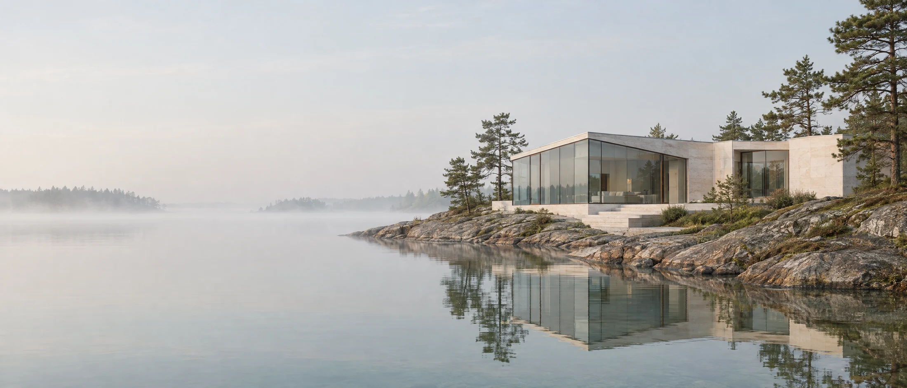

1Травертин, плиты 40 мм 2Стеклянная грань, 4,2 м в высоту 3Бронзовый переплёт, 38 мм 4Гранитный уступ под домом- 1Травертин, плиты 40 мм
- 2Стеклянная грань, 4,2 м в высоту
- 3Бронзовый переплёт, 38 мм
- 4Гранитный уступ под домом
Четыре материала и ничего лишнего
Травертин хранит тепло, стекло пускает свет, бронза чертит линии, а гранит держит дом на скале. Других нам не понадобилось.
- Лист
- 02 из 07
- Фасад
- вид с воды
- Время
- 7 утра
Один день в гостиной
Комната одна, меняется только солнце. Сдвиньте время на шкале.


07:40Утро. Солнце ещё низко и кладёт на пол длинные тёплые полосы. Над водой держится туман.
Так солнце стоит над мысом 20 августа.